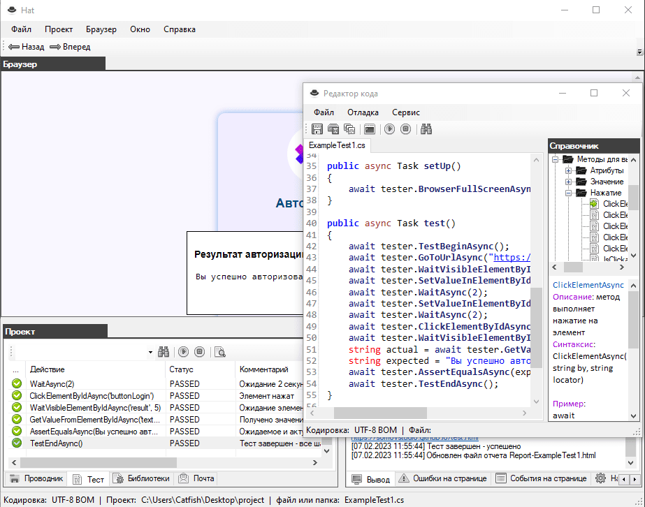

Описание
Особенность браузера Hat в том что автотесты напрямую выполняются в браузере без Selenium и WebDriver.
Встроенный фреймворк HatFramework содержит достаточное количество методов необходимых для выполнения задач автоматизации тестирования. При разработке автотестов используется язык программирования C#. Удобный интерфейс отображает все шаги выполнения теста с подробным описанием событий. Запуск автотестов возможен из командной строки операционной системы Windows это пригодится при использовании автотестов в популярных средствах непрерывной интеграции таких как: Jenkins, TeamCity, GitLab CI/CD.
Архив программы "Hat"
Программа "Hat" на GitHub